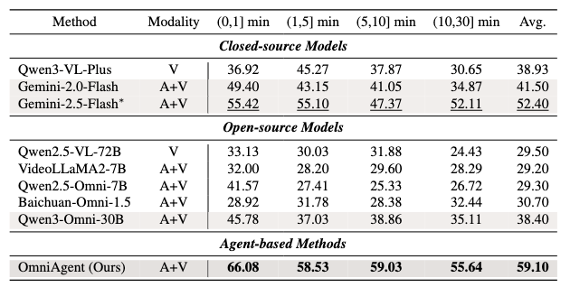
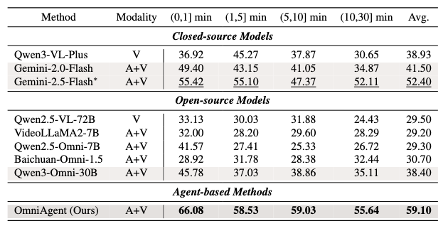

- Results on video understanding benchmarks from main paper.

- Results in ablation study from main paper.

Omnimodal large language models have made significant strides in unifying audio and visual modalities; however, they often lack the fine-grained cross-modal understanding and have difficulty with multimodal alignment. To address these limitations, we introduce OmniAgent, a fully audio-guided active perception agent that dynamically orchestrates specialized tools to achieve more fine-grained audio-visual reasoning. Unlike previous works that rely on rigid, static workflows and dense frame-captioning, this paper demonstrates a paradigm shift from passive response generation to active multimodal inquiry. OmniAgent employs dynamic planning to autonomously orchestrate tool invocation on demand, strategically concentrating perceptual attention on task-relevant cues. Central to our approach is a novel coarse-to-fine audio-guided perception paradigm, which exploits audio cues to efficiently localize temporal events and guide subsequent granular analysis. Extensive empirical evaluations on three audio-video understanding benchmarks demonstrate that OmniAgent achieves state-of-the-art performance, surpassing leading open-source and proprietary models by substantial margins of 10% - 20%.


@article{vidkv,
title={Plug-and-Play 1.x-Bit KV Cache Quantization for Video Large Language Models},
author={Tao, Keda and You, Haoxuan and Sui, Yang and Qin, Can and Wang, Huan},
journal={arXiv preprint arXiv:2503.16257},
year={2025}
}